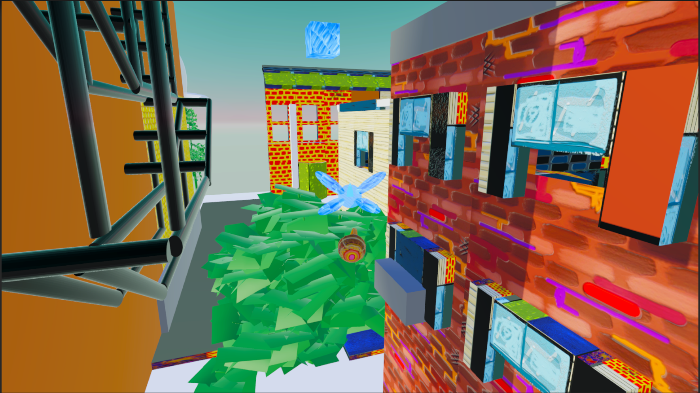
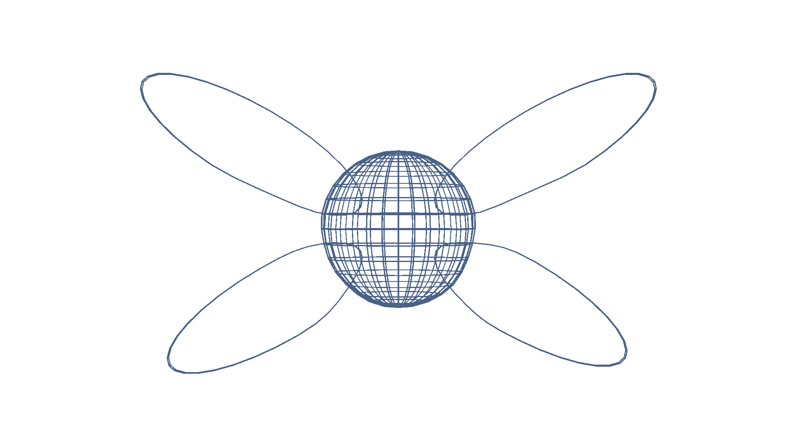
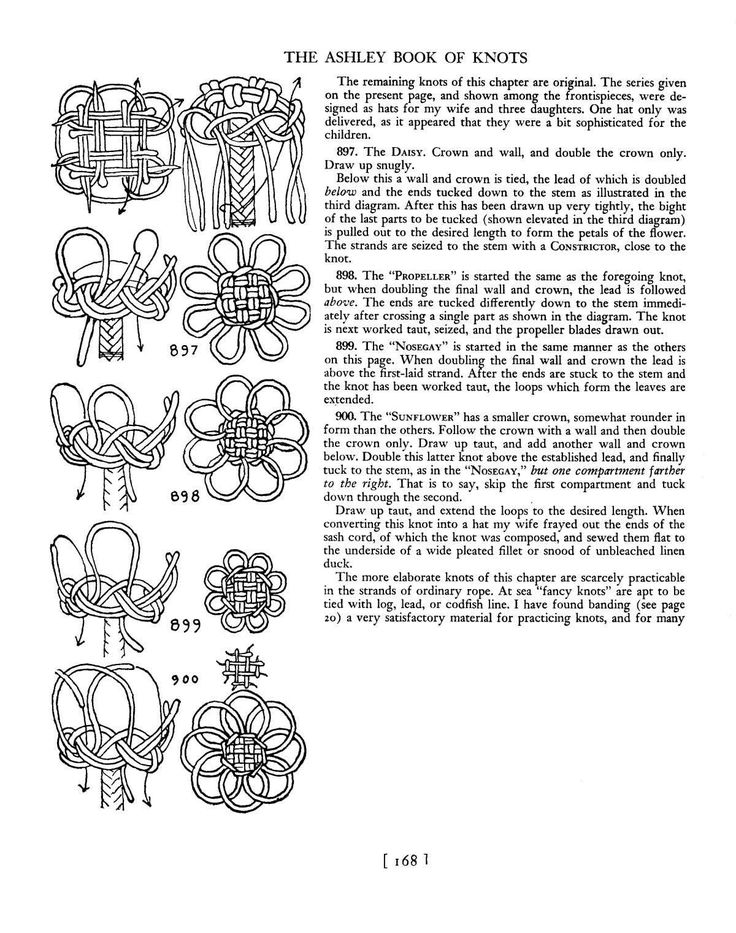
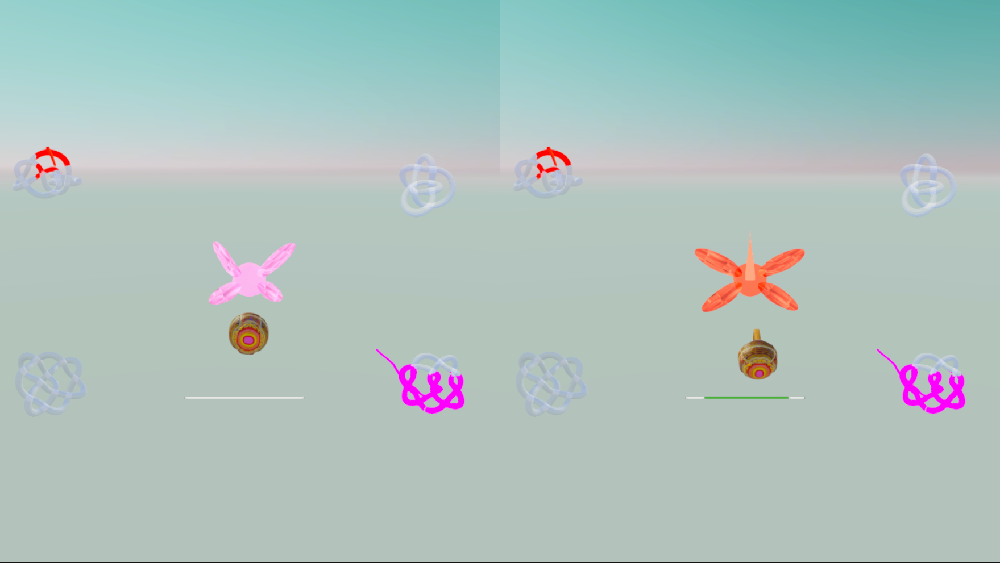

'Fary Game' shows a couple months iterative work on a multiplayer arcade game that is meant to have a quickly graspable flying system.
Essentially, it extends the path tracing play of a game like snake into a colorful 3D environment. Working on it has produced some questions and some challenges:

What would it mean to be the companion character in a computer program? Could this happen in a non-trivial way?
Is that possible, or do we always see ourselves as being at the point of the narrative, even if there are some archetypes of 'companionship' that we might be able to pull from.
These are questions I started to circle around as I worked with the graphic of the 'Fary'.
Over time, I started to imagine a game where players collected colorful energy in baskets, and then used this energy to draw out lines in screen space. They could
also 'recharge', or pick the energy up again by flying back into the lines left in the game world. Their total drawings could be used to intersect with 3D shapes and 'illuminate' them.
I think of these 'illuminated knots' as pieces of information or instruction that would be passed in communication or dialogue.

At the time, I was researching about knotting as a combined artistic/technical trade aboard sailing vessels. Among other names, the practice is known
as 'fancy-work'. One of the most striking explanations for the height of 'fancy-works' development regards literacy: these knots where invented, taught, and tied by an
overhwelming majority of sailors who did not read and did not write.

In 'Fary Game' (alternately titled 'Playing with Boundary') I had to prototype my own custom collision code for interpreting how the world is marked by the player's line, and how they in turn, re-enter it
or draw it through elements of the environment. The video clip below reveals some of
the most immediate issues recorded by the earliest demo versions. It can be difficult to quickly understand screen depth. Also, it is too difficutly for the player to smoothly follow a mark
already placed. My next step was to design some sort of assistance function which would help the player smoothly stay in the path. Otherwise there will continue to be a jittery, jumping problem between behaviours.
The first demo of 'Fary Game' featured two levels which chould be toggled from the opening screen.
The heading for the next section 'Manuscript', comes from
Judy Malloy's course 'The Electronic Manuscript'. In it we will look at 3 related demos. Together, they introduced shared ideas about character, and the relationship between the player and the program.

2 player mode split the screen directly down the middle and looked like the pages of a book.